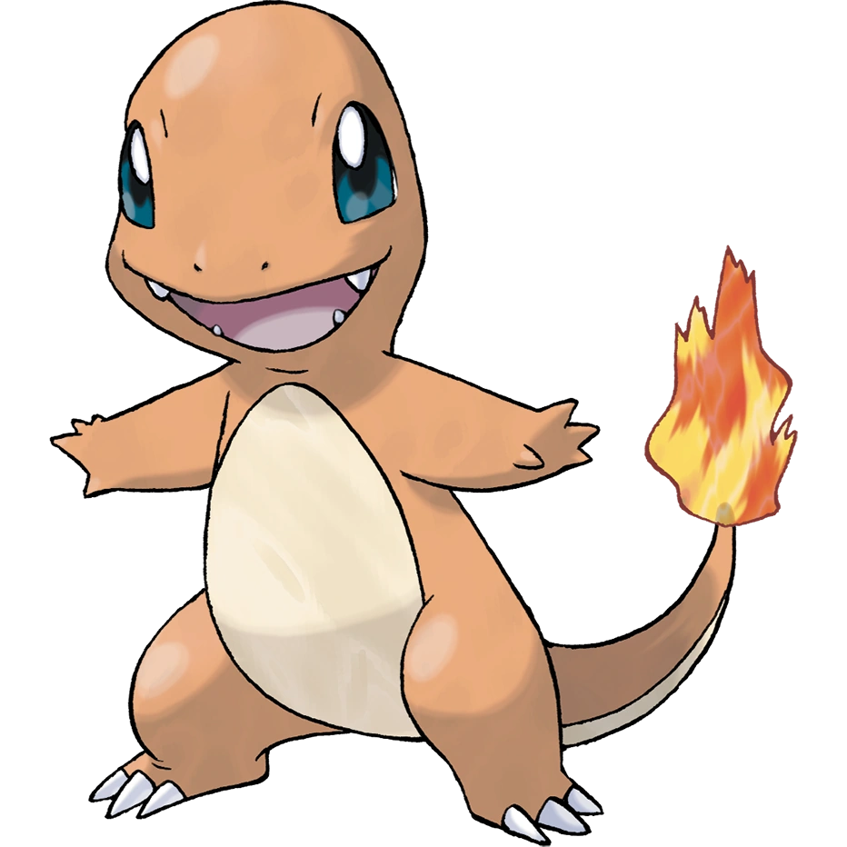
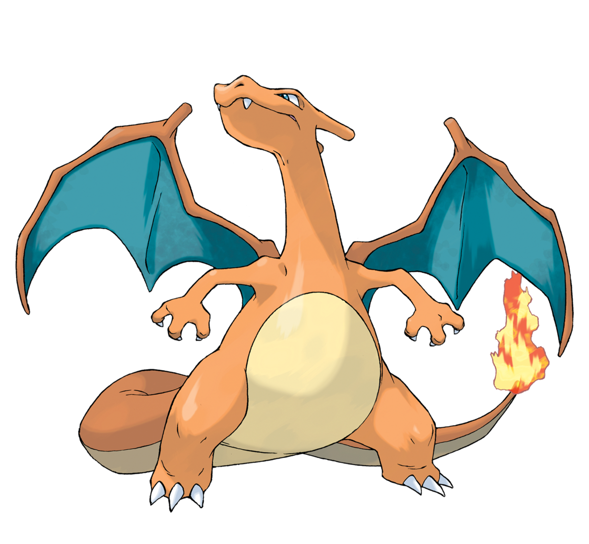
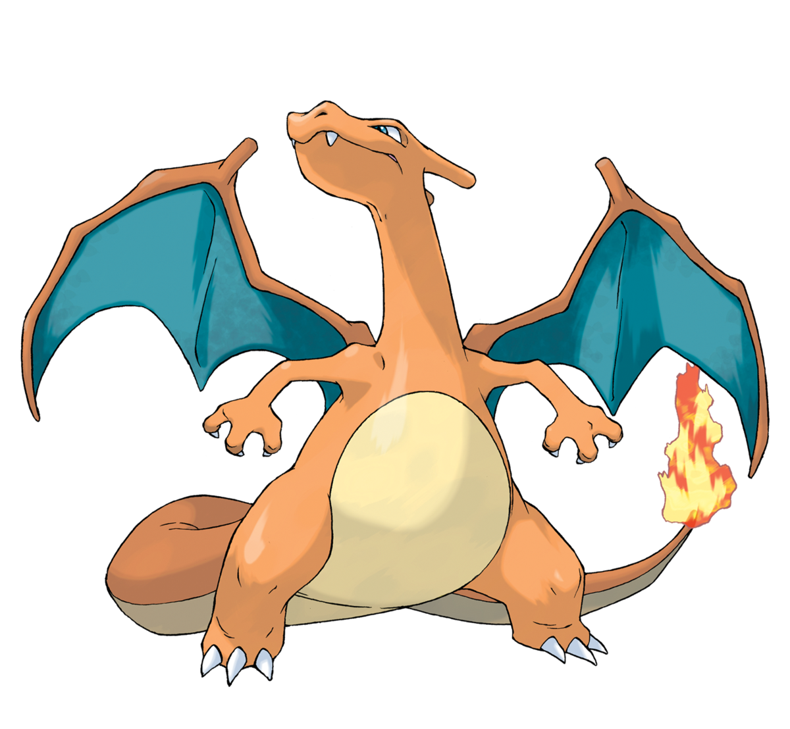
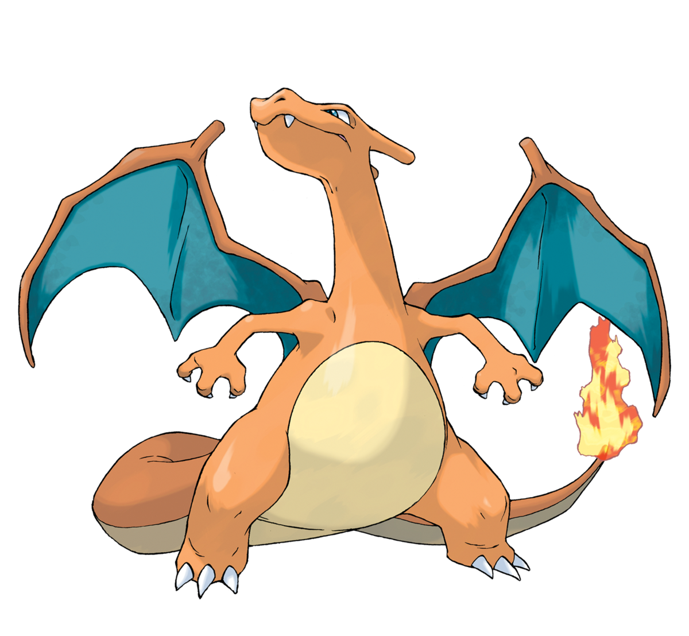

¡Bienvenidos a mi pagina sobre los "Iniciales de Kanto"!
Estamos emocionados de darte la bienvenida a nuestro rincón dedicado a los entrañables Pokémon iniciales de la región de Kanto. Aquí encontrarás un viaje informativo y entretenido a través de estos queridos compañeros de aventuras.
Descubre la Magia de Kanto:
Sumérgete en el mundo de los Pokémon iniciales que han capturado corazones y desafiado entrenadores a lo largo de generaciones. Desde los icónicos Bulbasaur, Charmander y Squirtle, hasta las emocionantes evoluciones que los transforman en formas aún más poderosas.
Explora Detalles Exclusivos:
Desentraña los secretos detrás de cada Pokémon inicial. Desde sus tipos y habilidades únicas hasta estadísticas base que determinan su fuerza en la batalla. ¿Cuál se adapta mejor a tu estilo de juego?
Historias y Curiosidades:
Descubre anécdotas fascinantes sobre estos Pokémon, desde su diseño original hasta curiosidades que quizás desconocías. Prepárate para sorprenderte con detalles que hacen que cada uno sea único.
¿Listo para Empezar tu Aventura?
Navega por nuestras secciones y sumérgete en el universo Pokémon de Kanto. Ya seas un veterano en los juegos o un nuevo entrenador, encontrarás algo emocionante aquí.
¡Gracias por unirte a nosotros en este viaje Pokémon! Esperamos que disfrutes explorando el fascinante mundo de los iniciales de Kanto.
¡Que comience la aventura!
Bulbasaur

Charmander
Squirtle
Iniciales:
Bulbasaur
Nombre: Bulbasaur
Tipo: Planta/Veneno
Número Nacional: #001
Bulbasaur es conocido como el "Pokémon Semilla". Es un Pokémon de tamaño pequeño, de color verde con manchas azules en su espalda. La peculiaridad de Bulbasaur es que tiene una planta brotando en su espalda, que eventualmente evolucionará a medida que crezca.
Evoluciones:
Bulbasaur evoluciona a Ivysaur al alcanzar el nivel 16. Luego, Ivysaur evoluciona a Venusaur al alcanzar el nivel 32. Cada etapa de evolución trae consigo cambios en la apariencia y habilidades del Pokémon.
Curiosidades:
Bulbasaur es uno de los pocos Pokémon que tiene una doble debilidad (fuego y psíquico) en su forma final, Venusaur.
La relación simbiótica entre Bulbasaur y la planta en su espalda es un rasgo único y distintivo.
Charmander
Nombre: Charmander
Tipo:Fuego
Número Nacional: #004
Charmander es conocido como el "Pokémon Lagarto". Es un pequeño dragón de color naranja y tiene una llama encendida en la punta de su cola. La llama en su cola indica su vitalidad y salud. A medida que Charmander evoluciona, la llama se vuelve más grande y brillante.
Evoluciones:
Charmander evoluciona a Charmeleon al alcanzar el nivel 16. Luego, Charmeleon evoluciona a Charizard al alcanzar el nivel 36. La línea evolutiva de Charmander es conocida por su transformación en un poderoso dragón de fuego.

Curiosidades:
La línea evolutiva de Charmander está inspirada en los dragones mitológicos occidentales, con Charizard representando un dragón más maduro y poderoso.
Charmander es uno de los Pokémon iniciales más populares y ha sido un favorito de los fanáticos desde la primera generación de juegos.
Squirtle
Nombre: Squirtle
Tipo: Agua
Número Nacional: #007
Squirtle es conocido como el "Pokémon Tortuga" y es un pequeño Pokémon de tipo Agua. Tiene una apariencia similar a una tortuga con una concha dura en su espalda. Squirtle es conocido por su habilidad para disparar chorros de agua con gran precisión.
Evoluciones:
Squirtle evoluciona a Wartortle al alcanzar el nivel 16. Luego, Wartortle evoluciona a Blastoise al alcanzar el nivel 36. La evolución de Squirtle lleva a la formación de un poderoso Pokémon de tipo Agua.
Curiosidades:
Squirtle es inspirado en una tortuga bebé, y su nombre proviene de la combinación de las palabras "squirt" (chorro) y "turtle" (tortuga).
En la serie de anime, Squirtle es famoso por formar parte del "Escuadrón Squirtle" con otros Squirtle.
¡Gracias por Explorar el Mundo de los Iniciales de Kanto!
En este viaje a través de la región de Kanto, hemos explorado los encantadores mundos de Bulbasaur, Charmander y Squirtle. Cada uno de estos Pokémon iniciales tiene su propia historia única y ha dejado una marca indeleble en el corazón de los entrenadores.
Recuerda que la elección de tu inicial es solo el comienzo de una emocionante odisea. Ya sea que te hayas decidido por la naturaleza de Bulbasaur, la llama ardiente de Charmander o las aguas refrescantes de Squirtle, cada uno ofrece una experiencia de juego única.


 
